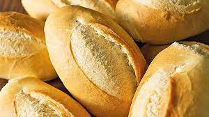
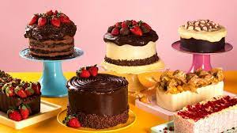

O melhor de nossos pães e bolos para você
Desde 2001, o lugar mais gostoso da cidade

Temos um processo de fabricação 100% caseiro. Esse foi um dos maiores motivos que fizeram com que a Padariacrescesse com as proporções que temos hoje. Temos um pão único de pura qualidade.
Uma viagem para a Itália nos fez conhecer alguns ingredientes que são essenciais para que nossa massa de bolo fique macia e gostosa. Hoje temos um produto incomparável.
Estamos na avenida Crispim do Amaral nº 261
Nosso telefone: (11) 97961-0529
Estamos funcinando nos seguintes horários:
Segunda á Sexta: 7h às 16h
Sábado e Domingos: 7h às 13h
Feriados: 8h às 12h